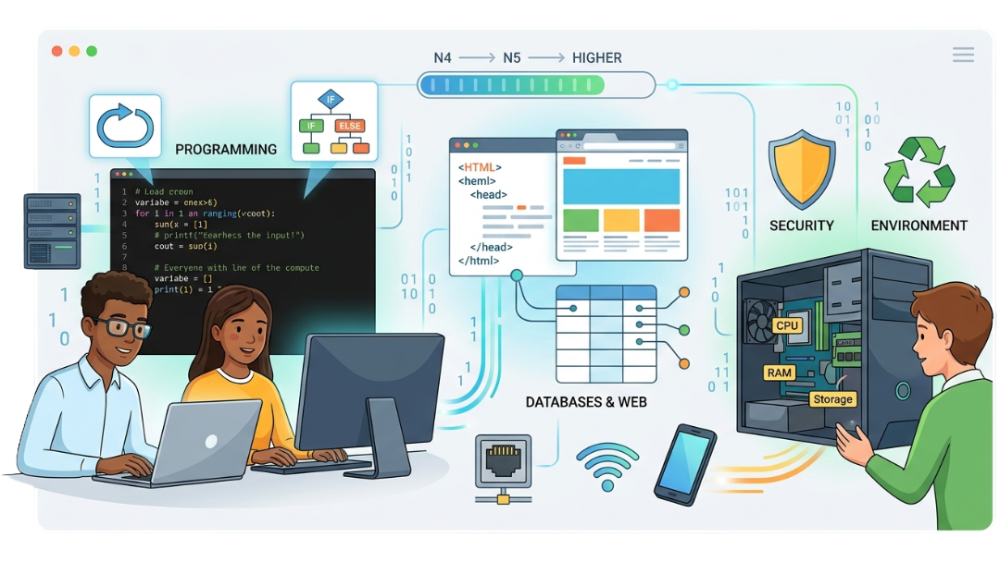
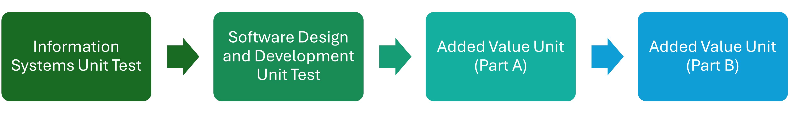

National 4
Course Overview
Use the sidebar (or the menu button on phones) to select different topics if you want to revise!

The National 4 Computing Science course offers a practical introduction to the world of digital technology. It is designed for students who are interested in how computer systems work, how software is created, and how digital data is managed in the modern world.
Unlike National 5, the National 4 qualification is internally assessed, meaning there is no final external exam. Students must pass three units and a practical assignment to achieve the full award.
The Purpose of this Website
This website is designed to be a comprehensive digital companion for students at every stage of their secondary computing journey. Whether you are just starting out or looking to master advanced concepts, our goal is to provide a clear, structured path to success.
The National 4 section of this site is built specifically for independent study. We provide all the resources, tutorials, and practical tasks required for you to work through the N4 course at your own pace. By mastering these fundamentals here, you build the confidence and technical "muscle memory" needed for more advanced levels.
In the tech world, the ability to teach yourself new skills is the ultimate superpower. This website encourages that independence by providing professional-grade resources that are easy to navigate, visually engaging, and updated to reflect the current SQA curriculum.
Course Structure
The course is divided into two main units of study, plus a final practical project.
1. Software Design and Development
Students develop fundamental computational thinking and programming skills. This unit focuses on taking a problem and turning it into a working piece of software.
- Programming Concepts: Learning to use variables, coding in a sequence, selection (if-statements), and iteration (loops) in Python, a high level coding language.
- The Development Process: Following the stages of analysis, design, implementation and testing.
- Data Representation: Understanding how computers represent positive integers in binary and how they store characters.
2. Information System Design and Development
This unit explores how digital information is structured and presented. It covers the technical skills required to build websites and manage data.
- Web Design: Using HTML to create the structure of a webpage and CSS to control its visual appearance.
- Database Design: Learning how to store, search, and sort information using database software.
- Computer Systems: An overview of hardware (processors, memory, storage) and the environmental and security implications of using technology.
Achievement and Assessment
To gain the National 4 qualification, students must successfully complete the following.
- Unit Assessments: Practical or written tasks completed in class for both the Software and Information Systems units.
- The Added Value Unit (AVU): This is the final "Computing Science Assignment." Students are given a brief and must independently design, implement, and test a digital solution. This project demonstrates that the student can apply all the skills they have learned throughout the year.
Typically, we will begin with the Information Systems Unit, then progress to the Software Design and Development Unit, before allowing the students to complete the AVU at the end of the year. There are several available AVUs that could be complete, and each involves a different combination of disciplines learned from the main course - for example, programming and databases, or programming and web development. The AVU is organised into a Part A and a Part B, though both parts will involve the same scenario.

Note: National 4 is a Pass/Fail qualification. It provides a solid foundation for students wishing to progress to National 5 Computing Science or move into vocational technical training.
Skills for the Future
While National 4 Computing Science introduces students to coding and data, the true value of the course lies in the transferable soft skills it develops. These are the high-level competencies that employers and universities look for, regardless of whether a student pursues a career in technology or a completely different field.
By completing this course, students cultivate a professional toolkit that includes:
-
Computational Thinking and Problem
Solving:
The course teaches students how to take a massive, complex problem and break it down into smaller, manageable parts (a process called decomposition). This logical approach to troubleshooting is just as useful in engineering, medicine, or business management as it is in software development. -
Analytical Thinking:
Through the Software Design unit, students learn to look at a set of requirements and figure out the most efficient way to achieve a goal. This involves "thinking like a machine"—identifying patterns and predicting outcomes before a single line of code is even written. -
Attention to Detail and Accuracy:
In programming and web design, a single misplaced semicolon or a spelling error in a tag can break an entire system. Students learn the importance of precision and the discipline required to "debug" and refine their work until it functions perfectly. -
Project Management and Independence:
The Added Value Unit (AVU) requires students to manage their time, follow a design brief, and see a project through from the initial idea to a finished, tested product. This builds the self-reliance and organizational skills necessary for the modern workplace. -
Digital Literacy & Ethics:
As we move further into the AI and "Big Data" era, understanding how information systems work is a vital life skill. Students gain a professional perspective on Cybersecurity, Data Privacy, and the Environmental Impact of technology—allowing them to navigate the digital world safely and responsibly.